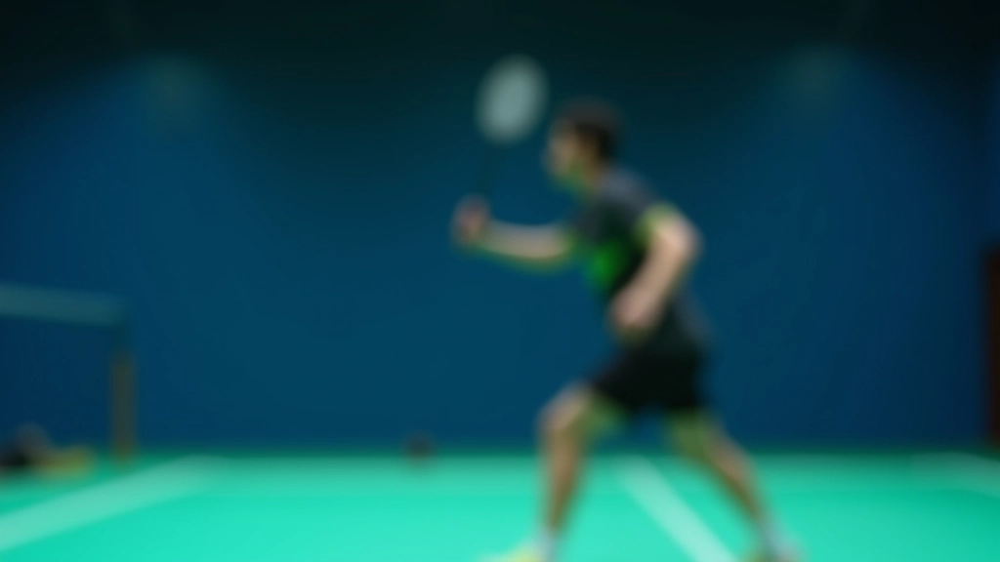
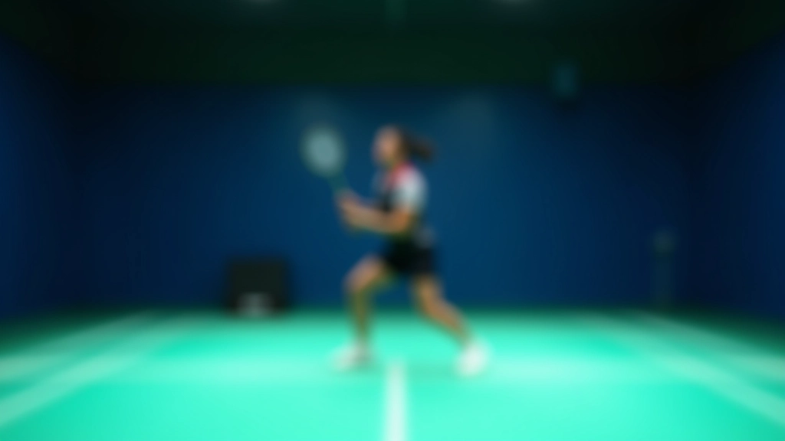
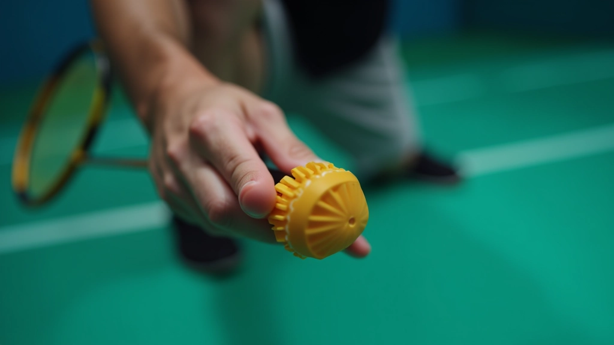
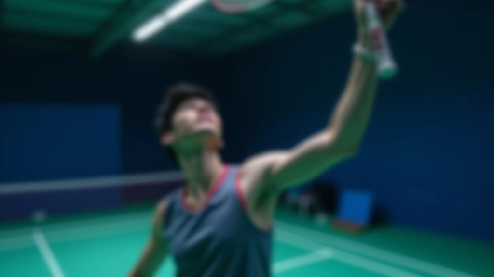
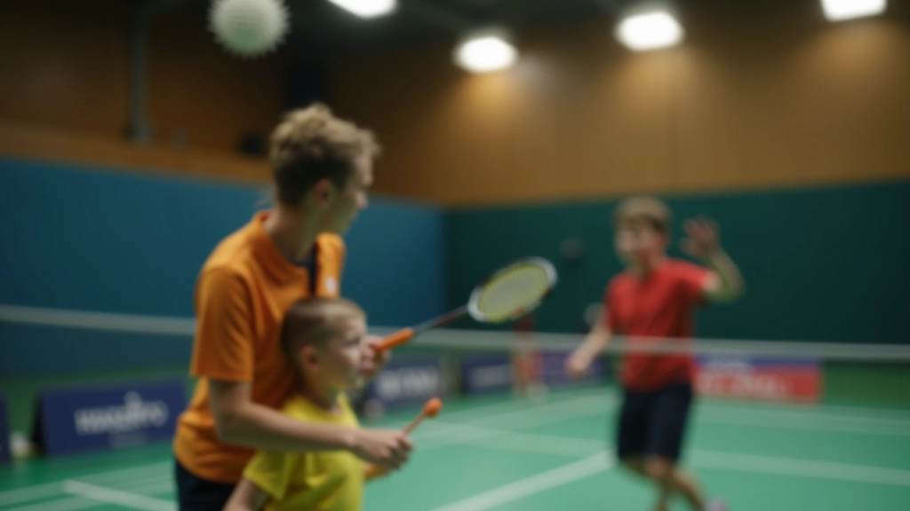

فن اللوب: ضربة دفاعية قوية
اكتشف كيف تحول اللوب لعبتك الدفاعية. هذه الضربة تعطيك الوقت والمسافة اللازمة للعودة للموقع الأمثل.
تعلم الخطوات الأساسية للضربة العالية من الصفر. نغطي وقفة القدمين والقبضة وحركة الذراع بطريقة مبسطة وعملية.

الضربة العالية هي إحدى الضربات الأساسية في الريشة الطائرة. تستخدمها عندما تكون الريشة عالية وتريد أن تضربها بقوة من فوق رأسك. إنها الضربة التي تعطيك السيطرة على اللعبة وتجبر خصمك على الرد السريع.
المشكلة أن كثيرين يبدأون بطريقة خاطئة — يرفعون الكوع بشكل عالي جداً أو يدورون جسمهم بطريقة غير طبيعية. النتيجة؟ إصابات في الكتف وعدم تحكم في الضربة. لكن إذا تعلمت الأساسيات بشكل صحيح، ستصبح الضربة سهلة وفعّالة جداً.

كل شيء يبدأ من القدمين. وقفتك تحدد توازنك وقوتك. تخيل أنك تقف في مربع، قدماك بعرض الأكتاف تقريباً. الوزن موزع بالتساوي على كلا الساقين — ليس على رؤوس الأصابع وليس على الكعبين.
عندما ترى الريشة تأتي نحوك من الأمام، خذ خطوة صغيرة للخلف بالقدم اليمنى (إذا كنت يميناً). هذه الخطوة تحضرك للوقفة النهائية. الآن الوزن ينتقل قليلاً للقدم الخلفية. هذا يعطيك قوة إضافية عند الضرب.
لا تقفز عالياً في البداية. البقاء على الأرض أهم من الارتفاع. التوازن أولاً، القوة ثانياً.


الإمساك بالمضرب بشكل صحيح هو الفرق بين ضربة قوية وضربة ضعيفة. تخيل أنك تصافح المضرب — لا تقبضه بقوة زائدة. القبضة يجب أن تكون مريحة وطبيعية. الأصابع الأربع تمسك المقبض، والإبهام يساعد في الدعم من الخلف.
للضربة العالية تحديداً، تأكد أن المضرب يشير قليلاً للخلف (زاوية حوالي 45 درجة). هذا يسمح لك بضرب الريشة من أعلى نقطة ممكنة. إذا كان المضرب مائلاً للأمام، ستضرب الريشة قبل أن تصل لأعلى نقطة — وستفقد القوة.
1 لا تقبض المضرب بقوة شديدة — القبضة المريحة أفضل
2 المضرب يجب أن يشير للخلف قليلاً قبل الضربة
3 الإبهام يدعم المقبض من الخلف
هذا الدليل يقدم معلومات تعليمية حول تقنيات الضربة العالية. الممارسة العملية تحت إشراف مدرب متخصص ستعطيك نتائج أفضل وتقلل من احتمال الإصابة. كل شخص مختلف — جسمك وحالتك البدنية فريدة. ركز على الوقفة والإمساك الصحيحة أولاً قبل زيادة القوة.
الآن جاء الجزء الأساسي — حركة الذراع والضربة نفسها. الذراع تتحرك من الأسفل للأعلى. رفع المضرب للخلف والأعلى — تخيل أنك تريد أن تلمس السقف بيدك. الكوع يبقى منحنياً بشكل طبيعي (حوالي 90 درجة)، وليس مفرود تماماً.
عندما تضرب، تدير جسمك قليلاً. الكتف الخلفي يتراجع والكتف الأمامي يتقدم قليلاً. هذا يعطيك قوة إضافية من دوران الجسم وليس من الذراع فقط. الذراع تنزل بقوة وسرعة، والمعصم ينعطف قليلاً عند لحظة الاتصال بالريشة.
كثير من المبتدئين يخطئون هنا — يرفعون الكوع عالياً جداً. هذا يقلل من القوة ويجعل الضربة غير دقيقة. الكوع يجب أن يكون تحت المعصم دائماً عند الضربة.


تعلم الضربة العالية ليس سهلاً في البداية، لكنه ليس مستحيلاً أيضاً. المفتاح هو التكرار المنتظم. ابدأ ببطء — لا تركض للقوة الكاملة. ركز على الحركة الصحيحة أولاً. السرعة والقوة ستأتيان مع الممارسة.
جرب هذا التمرين: قف في المكان وارفع المضرب للخلف والأعلى 20 مرة. ركز على شعور الحركة. لا تقلق من الريشة الآن. فقط الحركة. بعد أسبوع أو اثنين من هذا التمرين، أضف الريشة. ستجد أن جسمك يتذكر الحركة الصحيحة.
ابدأ بدون ريشة — فقط حركة الذراع
أضف الريشة — ركز على الدقة قبل القوة
زد السرعة تدريجياً — لا تتسرع
تدرب مع زميل — اطلب منه ملاحظة وقفتك
الضربة العالية تتطلب ثلاثة أشياء أساسية: وقفة صحيحة، إمساك مريح، وحركة ذراع منظمة. لا توجد طريقة سحرية. الجميع يبدأ من الصفر ويتعلم تدريجياً. أنت الآن تعرف الأساسيات. الخطوة التالية؟ اذهب للملعب وتدرب. جرب ما تعلمته. بعد بضعة أسابيع، ستصبح الحركة طبيعية. وعندها فقط يمكنك التركيز على تحسين القوة والدقة. الصبر هو المفتاح.
إذا كنت تريد معرفة المزيد عن تقنيات متقدمة أو تمارين محددة لتحسين ضربتك، تصفح المقالات الأخرى في هذا القسم. كل مقالة تركز على جزء معين من اللعبة. معاً، ستصبح لاعباً أفضل.

فريق التحرير والمراجعة
كتبه فريق تحرير الريشة العالية، المتخصص في تقديم تمارين عملية وسهلة المتابعة لتحسين الضربة العالية واللوب.
اكتشف كيف تحول اللوب لعبتك الدفاعية. هذه الضربة تعطيك الوقت والمسافة اللازمة للعودة للموقع الأمثل.

5 تمارين فعّالة تزيد من دقتك وسيطرتك. يمكنك تطبيقها في التدريب الفردي أو مع الفريق.

للاعبين المتقدمين: تعمق أكثر في التفاصيل الدقيقة والحيل التي تفصل بين اللاعب الجيد والمحترف.